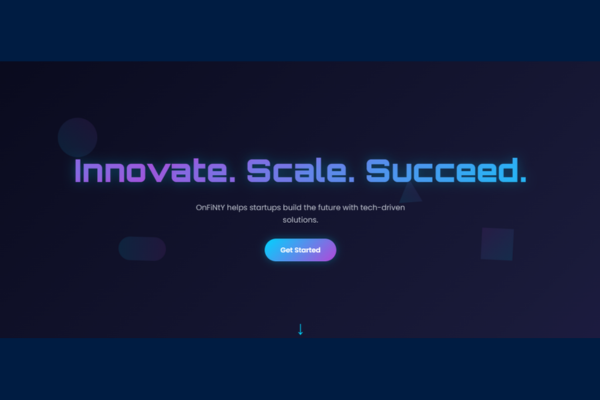

OnFiNtY Tech Startup Page
A visually stunning and futuristic landing page for a tech startup, featuring neon aesthetics, floating animations, and a parallax background effect.
Project Overview
Futuristic UI/UX
A dark, neon-infused design that screams 'tech'. Using the 'Orbitron' font and glowing effects, the UI immediately grabs the user's attention.
Dynamic & Responsive
Looks incredible on any screen. The layout adapts seamlessly, and the mobile menu is both functional and stylish with its slide-in animation.
Immersive Animations
Combines multiple animation techniques: floating background shapes, a parallax scroll effect, and fade-in transitions for a deeply engaging experience.
Key Features

"Immersive Parallax Background"
The background isn't static. It features shapes that gently float and move at a different speed when you scroll (parallax), creating a sense of depth.
.png)
"Glowing Neon Hero Section"
The main headline uses an animated gradient to create a 'pulsing' energy effect. Combined with a glow, it makes a bold first impression.
.png)
"Stylish Gradient Card Design"
The service and about cards use a clever CSS trick with pseudo-elements to create beautiful, glowing gradient borders that make the content pop.
.png)
"Engaging Call-to-Action Button"
The CTA button features a satisfying hover effect with a light sheen that sweeps across it, encouraging users to click and engage.
Technical Implementation
Advanced CSS Styling
Uses CSS variables, gradients, `backdrop-filter`, and pseudo-elements for complex effects like animated gradient borders.
Multi-Layered Animations
Combines CSS `@keyframes` for continuous animations (floating shapes) with a JS-powered parallax effect for a rich visual experience.
Performance First (Observer API)
Content animations are triggered efficiently using the Intersection Observer API, ensuring a smooth page despite all the visual effects.
Custom Typography
Uses 'Orbitron' and 'Poppins' from Google Fonts to establish a unique, high-tech brand identity that stands out.
100% Vanilla JavaScript
All interactive elements, from the menu to scroll effects, are handled with clean, dependency-free JavaScript for optimal speed.
SVG Icons
Uses scalable inline SVG icons which are lightweight and look crisp on all displays, ensuring high-quality visuals.
Design & Development Details
Color Scheme: A futuristic dark theme (#0a0b1e) with vibrant neon blue (#00d4ff) and purple (#b347d9) accents.
Layout: A modern, single-column dominant layout that uses grids for specific sections like services.
Animations: A complex combination of JS-triggered scroll animations, a JS-driven parallax effect, and continuous CSS keyframe animations.
Skills Demonstrated: Advanced CSS Animation, JavaScript DOM Manipulation, UI/UX Design, Responsive Web Design, Performance Optimization.
Time taken to build: A highly stylized project like this would take around 15-20 hours to perfect.
Pricing: Due to the complexity of the animations and design, my personal pricing would be in the $70 - $100 range.